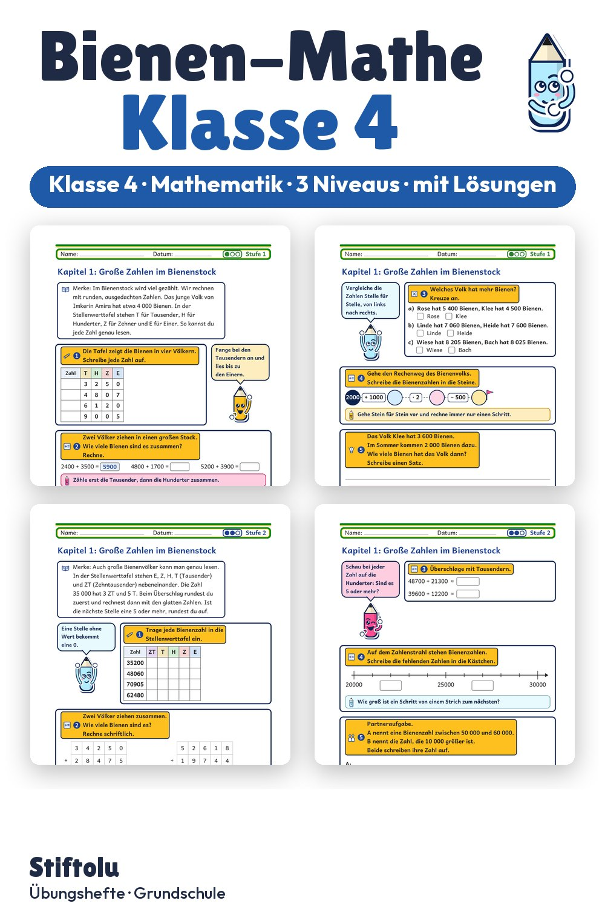

Werbung · Übungsheft von Stiftolu
Bienen im Mathe-Unterricht: Honig abfüllen und Flugwege berechnen, Klasse 4

Ein Bienenvolk liefert die Zahlen: bis zu einer Million Bienen im Stock, Honig in Gramm und Kilogramm, Flugwege in Metern und Kilometern. Dazu üben Viertklässler, Sechsecke in Waben zu erkennen. Alle Angaben sind ausgedacht, Vorwissen über Bienen braucht niemand. Dieses Übungsmaterial mit 48 Seiten und Lösungen ist erhältlich auf eduki.